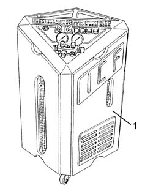
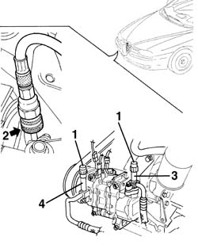
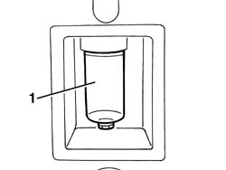

5040A10 Air conditioning refrigerant CIRCUIT - Draining and Refilling
- Path
- Procedures > 50 AUXILIARY UNITS > 5040 AIR CONDITIONING CASING AND COMPONENTS > 5040A air conditioner coolant circuit > 5040A10 Air conditioning refrigerant CIRCUIT - Draining and Refilling
- Kind
- repair procedure (removal / refitting; the operation number is the code)
- Applies to
- all engines; all production periods
- Interactive page
- https://sloeber94.github.io/elrnDB-a156/en/#/3238305
Applies to: all engines; all production periods
Applies to: all engines; all production periods; only with equipment: Air Conditioner
1. Use the special draining/repressurizing equipment.
 | Name | Country |
|---|---|---|
- | Station for air conditioning system | 1.826.004.000 |

Applies to: all engines; all production periods; only with equipment: Air Conditioner
Let the engine run with the air conditioning switched on for 10 - 15 minutes.
1. Undo the repressurizing valve plugs.
2. Before attaching the connectors to the needle valves, move the knurled ring nut upwards.
3. Connect the high pressure connecting pipe (HIGH) to the corresponding rapid attachment valve.
4. Connect the low pressure connecting pipe (LOW) to the corresponding rapid attachment valve.

Applies to: all engines; all production periods; only with equipment: Air Conditioner
Start the procedure for draining the coolant fluid, following the instructions in the equipment manual.
1. Whilst draining the system, the fluid removed from the compressor should be collected in a special container.

Applies to: engines: 1.6 TS , 1.8 TS, 2.5 V6, 1.9 JTD 8v ; all production periods; only with equipment: Air Conditioner
Ripristinare nell'impianto la stessa quantità di olio indicata nel contenitore.
 | Type | Component | Name | Qty. |
|---|---|---|---|---|
- | Oil | Air conditioner compressor | PAG SP 20 | - |
Applies to: engines: 2.4 JTD 10v; all production periods; only with equipment: Air Conditioner
Ripristinare nell'impianto la stessa quantità di olio indicata nel contenitore.
| Type | Component | Name | Qty. |
|---|---|---|---|---|
- | Oil | Air conditioner compressor | Nippodenso ND9 | - |
Applies to: all engines; all production periods; only with equipment: Air Conditioner
If certain components are replaced, the following quantities of fluid must be added for each of the components replaced:
- Drier filter, 15 cm3 .
- Pipes 5 cm3/m.
- Evaporator 40 cm3
- Condenser40cm3
- Condenser with built in filter 50 cm3
In the case of accidental breakages which result in the rapid draining of the system (in less than 5 minutes), it is not possible to determine the exact amount of fluid which has escaped because of the high pressure of the fluid. Add 50 cm3 of fluid
Start the coolant fluid repressuring procedure, following the instructions in the equipment manual.
Introduce the recommended quantity of coolant fluid.
| Type | Component | Name | Qty. |
|---|---|---|---|---|
- | Coolant fluid [kg] | Air conditioning circuit | R134a | 0.650 |
Applies to: all engines; all production periods; only with equipment: Air Conditioner
In the case of damage to the compressor or other system components followed prolonged exposure to the air of the pipes (more than 6 hours), the system 'WASHING' procedure has to be carried out, proceeding as follows.
Clean the pipes connected to the compressor using an air line.
Connect the (now drained) system to the repressurizing equipment.
Introduce the recommended quantity of coolant fluid at the high pressure side.
Recover the coolant fluid from the low pressure side.
Repeat the introduction and recover the fluid.
Proceed with the system draining and repressurizing operations as described previously.
Applies to: engines: 1.6 TS , 1.8 TS, 2.5 V6, 1.9 JTD 8v ; all production periods; only with equipment: Air Conditioner
Refill the system with the recommended amount of fluid.
| Type | Component | Name | Qty. |
|---|---|---|---|---|
- | Oil [g] | Air conditioner compressor | PAG SP 20 | 130 |
Applies to: engines: 2.4 JTD 10v; all production periods; only with equipment: Air Conditioner
Refill the system with the recommended amount of fluid.
| Type | Component | Name | Qty. |
|---|---|---|---|---|
- | Oil [g] | Air conditioner compressor | Nippodenso ND9 | 150 |
Applies to: all engines; all production periods
Applies to: all engines; production: da 03/02 a 09/03, da 10/03; only with equipment: Air Conditioner
1. Use the special draining/repressurizing equipment.
| Name | Country |
|---|---|---|
- | Station for air conditioning system | 1.826.004.000 |
Applies to: all engines; production: da 03/02 a 09/03, da 10/03; only with equipment: Air Conditioner
Let the engine run with the air conditioning switched on for 10 - 15 minutes.
1. Undo the repressurizing valve plugs.
2. Before attaching the connectors to the needle valves, move the knurled ring nut upwards.
3. Connect the high pressure connecting pipe (HIGH) to the corresponding rapid attachment valve.
4. Connect the low pressure connecting pipe (LOW) to the corresponding rapid attachment valve.
Applies to: all engines; production: da 03/02 a 09/03, da 10/03; only with equipment: Air Conditioner
Start the procedure for draining the coolant fluid, following the instructions in the equipment manual.
1. Whilst draining the system, the fluid removed from the compressor should be collected in a special container.
Applies to: engines: 1.6 TS , 1.8 TS, 2.0 JTS, 2.5 V6, 3.2 V6, 1.9 JTD 8v , 2.0 JTS; production: da 03/02 a 09/03, da 10/03; only with equipment: Air Conditioner
Ripristinare nell'impianto la stessa quantità di olio indicata nel contenitore.
| Type | Component | Name | Qty. |
|---|---|---|---|---|
- | Oil | Air conditioner compressor | PAG SP 10 | - |
Applies to: engines: 2.4 JTD 10v; production: da 03/02 a 09/03, da 10/03; only with equipment: Air Conditioner
Ripristinare nell'impianto la stessa quantità di olio indicata nel contenitore.
| Type | Component | Name | Qty. |
|---|---|---|---|---|
- | Oil | Air conditioner compressor | Nippodenso ND9 | - |
Applies to: all engines; production: da 03/02 a 09/03, da 10/03; only with equipment: Air Conditioner
If certain components are replaced, the following quantities of fluid must be added for each of the components replaced:
- Pipes 5 cm3/m.
- Evaporator 40 cm3
- Condenser40cm3
- Condenser with built in filter 50 cm3
In the case of accidental breakages which result in the rapid draining of the system (in less than 5 minutes), it is not possible to determine the exact amount of fluid which has escaped because of the high pressure of the fluid. Add 50 cm3 of fluid
Start the coolant fluid repressuring procedure, following the instructions in the equipment manual.
Introduce the recommended quantity of coolant fluid.
| Type | Component | Name | Qty. |
|---|---|---|---|---|
- | Coolant fluid [kg] | Air conditioning circuit | R134a | 0.500 |
Applies to: all engines; production: da 03/02 a 09/03, da 10/03; only with equipment: Air Conditioner
In the case of damage to the compressor or other system components followed prolonged exposure to the air of the pipes (more than 6 hours), the system 'WASHING' procedure has to be carried out, proceeding as follows.
Clean the pipes connected to the compressor using an air line.
Connect the (now drained) system to the repressurizing equipment.
Introduce the recommended quantity of coolant fluid at the high pressure side.
Recover the coolant fluid from the low pressure side.
Repeat the introduction and recover the fluid.
Proceed with the system draining and repressurizing operations as described previously.
Applies to: engines: 1.6 TS , 1.8 TS, 2.0 JTS, 2.5 V6, 3.2 V6, 1.9 JTD 8v , 2.0 JTS; production: da 03/02 a 09/03, da 10/03; only with equipment: Air Conditioner
Refill the system with the recommended amount of fluid.
| Type | Component | Name | Qty. |
|---|---|---|---|---|
- | Oil [g] | Air conditioner compressor | PAG SP 10 | 130 |
Applies to: engines: 2.4 JTD 10v; production: da 03/02 a 09/03, da 10/03; only with equipment: Air Conditioner
Refill the system with the recommended amount of fluid.
| Type | Component | Name | Qty. |
|---|---|---|---|---|
- | Oil [g] | Air conditioner compressor | Nippodenso ND9 | 150 |
Topics that link to this page (55)
- L11 CLIMATE CONTROL WORKING IRREGULARLY
- L12 CLIMATE CONTROL TOO COLD
- 5040B Check on operation of air conditioning system (pressures)
- 0010T62 coolant for air conditioning system dehydrate and recharge
- 1004B10 power unit with manual gearbox - r + r
- 1004B12 power unit with manual gearbox - r+r for versions with a/c
- 1004B24 power unit with manual gearbox with hydraulic selection - r r
- 1008A44 rear rigid mount - r r
- 1008A46 cam shaft left rigid mount - r r
- 1016C10 cylinder head - r + r and replace gasket
- 1016D21 lh cylinder head - r r and replace gasket for versions with air conditioner
- 1020A20 crank case oil sump - r + r clean seals for sealant application
- 1020D10 front crank shaft oil seal cover - r + r and replace seals with timing belt removed
- 1020D11 front crankshaft oil seal cover-r r and replace seal with timing belt removed-includes cleaning mating surfaces and applying sealant
- 1020D15 Crankshaft oil seal FRONT COVER - R.R. and Replace. gaskets on engines with oil pump on crankshaft and heat exchanger
- 1020D36 flywheel end oil seal - replace for manual gearbox with hydraulic selection versions
- 1020D38 flywheel side oil seal - replace
- 1024B10 engine flywheel - r + r for versions with manual gearbox
- 1024B11 engine flywheel - r r for manual gearbox with hydraulic selection versions
- 1028H10 connecting rod and piston set - r r
- 1076B10 exhaust pipe assembly - r + r
- 1076B34 front catalytic converter attachment seal - replace
- 1080B39 right catalytic preconverter r r or replace cylinder head gasket
- 1080B62 catalytic converter - r + r
- 1084B26 emgine oil intake duct - r r
- 1088D24 rigid pipe for coolant inlet to water pump - r + r
- 1810A20 clutch - r + r
- 1810A28 clutch - r r for manual gearbox with hydraulic selection versions
- 2110A10 manual gearbox and differential - r + r
- 2110A11 manual gearbox with differential - r r for versions with hydraulic selection
- 2110C24 seals for gearbox input shaft - r r for manual gearbox with hydraulic selection versions
- 4130B40 outlet pipe from pump to power steering case r r
- 5040A14 air conditioner cooling circuit - check and repair any leaks by tightening fittings
- 5040A20 air conditioner compressor - r+r - includes fluid level check and top up if necessary
- 5040A26 compressor mount - r r
- 5040A40 air conditioner condenser - r+r
- 5040A44 air conditioner dehydrating filter/accumulator - r+r
- 5040A50 pipe from compressor to air conditioner condenser - r+r
- 5040A52 pipe from condenser to dehydrating filter - r+r
- 5040A56 line from dehydrating - r r
- 5040A57 evaporator inlet pipe - r r
- 5040A60 pipe from condenser to evaporator (expansion pipe) - r+r
- 5040A61 pipe from evaporator fitting to compressor - r r
- 5040A69 PIPE from condenser to connector for evaporator - R.R.
- 5040A72 evaporator outlet pipe - r r
- 5040A73 compressor inlet pipe - r r
- 5040A76 tandem pipe for delivery and return from evaporator rr
- 5040A78 Supply and return PIPE to'EVAPORATOR - R.R.
- 5040A80 expansion/connection pipe - r r
- 5040B30 expansion valve (tube orifice) - r+r
- 5040C10 air conditioner box - r+r
- 5040C12 air conditioner housing - r r with facia disconnected
- 5505A26 bonnet wiring - r r
- 5505C30 under-facia wiring - r r
- 5505C31 under-facia wiring - r r